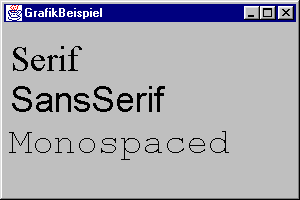
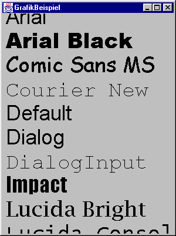

25.2.1 Font-Objekte
Führt man die Schriftausgabe wie bisher besprochen durch, werden
die Texte in einem systemabhängigen Standard-Font ausgegeben.
Soll ein anderer Font zur Textausgabe verwendet werden, so muss zunächst
ein passendes Objekt der Klasse Font
erzeugt und dem verwendeten Graphics-Objekt
zugewiesen werden:
Die Methode setFont
wird dazu verwendet, das Font-Objekt
font in den Grafikkontext einzutragen,
und mit getFont
kann der aktuelle Font abgefragt werden.
Das Erzeugen neuer Font-Objekte
wird über die drei Parameter name,
style und size
des Konstruktors der Klasse Font
gesteuert:
Der Parameter name gibt den
Namen des gewünschten Fonts an. In allen Java-Systemen sollten
die Namen SansSerif
(früher Helvetica),
Serif
(früher TimesRoman)
und Monospaced
(früher Courier)
unterstützt werden. Sie stehen für die systemspezifischen
Proportionalzeichensätze der Familien Helvetica
und TimesRoman
bzw. für die nichtproportionale Familie Courier.
Unter Windows werden diese Standardnamen auf die True-Type-Fonts Arial,
Times New Roman
und Courier New
abgebildet.
Der Parameter style wird verwendet,
um auszuwählen, ob ein Font in seiner Standardausprägung,
fett oder kursiv angezeigt werden soll. Java stellt dafür die
in Tabelle 25.1 aufgeführten
numerischen Konstanten zur Verfügung. Die Werte BOLD und ITALIC
können auch gemeinsam verwendet werden, indem beide Konstanten
addiert werden.
Tabelle 25.1: Style-Parameter
Der dritte Parameter des Konstruktors gibt die Größe der
gewünschten Schriftart in Punkt an. Übliche Punktgrößen
für die Ausgabe von Text sind 10 oder 12 Punkt.
Das folgende Beispiel gibt die drei Standardschriften in 36 Punkt
aus:
001 /* Schriften.inc */
002
003 public void paint(Graphics g)
004 {
005 Font font;
006 String[] arfonts = {"Serif","SansSerif","Monospaced"};
007
008 for (int i=0; i<arfonts.length; ++i) {
009 font = new Font(arfonts[i],Font.PLAIN,36);
010 g.setFont(font);
011 g.drawString(arfonts[i],10,30 + (i+1)*(36+5));
012 }
013 }
|
Schriften.inc |
Listing 25.2: Ausgabe verschiedener Schriften

Abbildung 25.3: Ausgabe verschiedener Fonts
Es gibt im AWT eine Klasse GraphicsEnvironment,
mit der wir uns die auf dem konkreten System verfügbaren Font-Familien
abholen können:
Das folgende Beispiel zeigt die verfügbaren Schriftarten an:
001 /* Standardschriften.inc */
002
003 public void paint(Graphics g)
004 {
005 Font font;
006 GraphicsEnvironment ge =
007 GraphicsEnvironment.getLocalGraphicsEnvironment();
008 String[] arfonts = ge.getAvailableFontFamilyNames();
009
010 for (int i=0; i<arfonts.length; ++i) {
011 font = new Font(arfonts[i],Font.PLAIN,36);
012 g.setFont(font);
013 g.drawString(arfonts[i],10,(i+1)*(36+5));
014 }
015 }
|
Standardschriften.inc |
Listing 25.3: Auflistung der Standardschriften
Die Ausgabe des Programms ist (man muss das Fenster etwas größer
ziehen, damit alle Schriften angezeigt werden):

Abbildung 25.4: Liste der Standardschriften